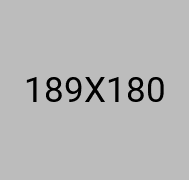
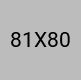
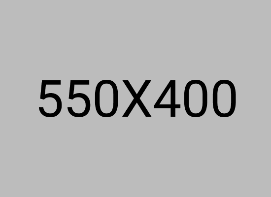

Cheese baked right into the crust, stone-oven finished, and made fresh to order for Bradford delivery or collection.
Stuffed crust pizza is a pizza with cheese baked inside the crust so that every bite of the edge contains melted cheese. Pollo Ranch serves halal stuffed crust pizza in Bradford, made fresh to order in our stone oven.
We deliver within 4 miles of Bradford BD7 for a £2.50 fee with a £20 minimum order. You can also collect with no minimum order.
In a stuffed crust pizza, cheese is folded into the outer edge of the dough before baking. As the pizza cooks in the oven, the cheese inside the crust melts. When you pick up a slice, the crust contains a pocket of hot, melted cheese.
This gives you more cheese in every slice and makes the crust worth eating on its own rather than leaving it on the plate.



A stuffed crust pizza gives you more value from every slice. The cheese inside the crust adds a second layer of flavour and texture that a standard crust cannot match.
Our stuffed crust pizzas are baked in a high-temperature stone oven, which melts the cheese inside the crust while creating a crisp, golden exterior.
We deliver halal stuffed crust pizza within 4 miles of Bradford BD7 1BA. The minimum order is £20.00 and the delivery fee is £2.50.
Useful internal links: Pizzas, Menu Hub, Delivery, Collection, and FAQ.